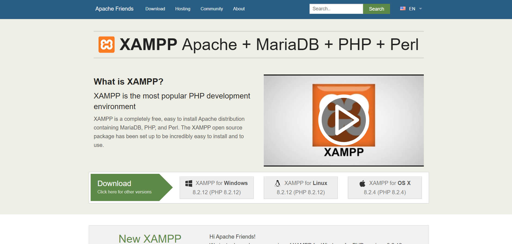
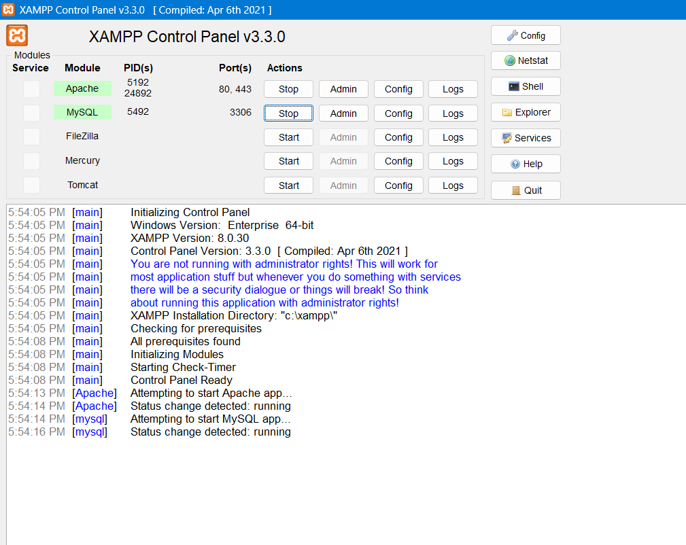
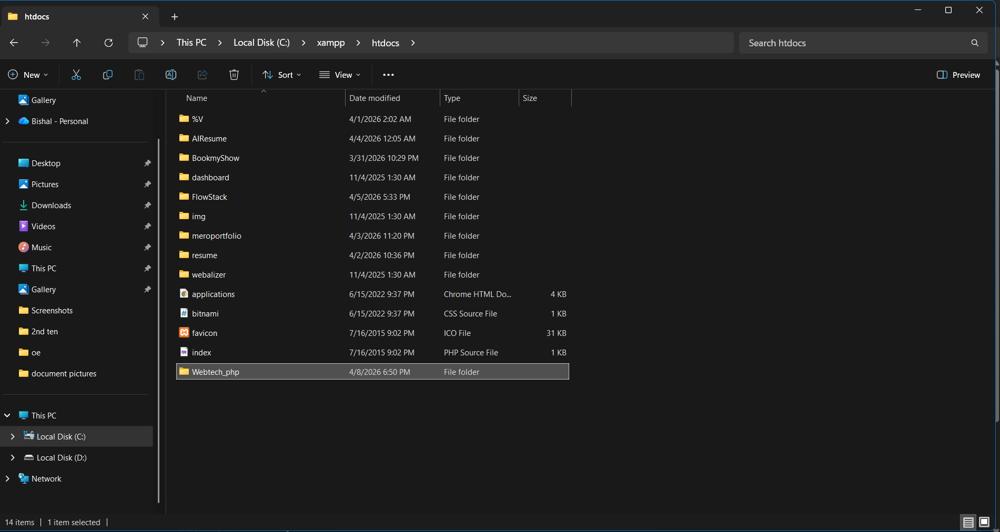
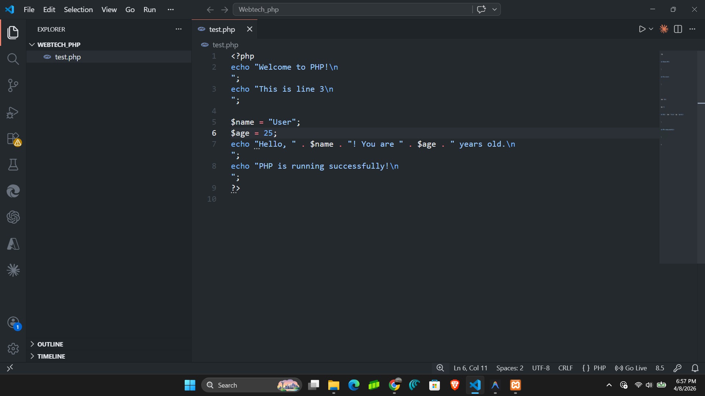
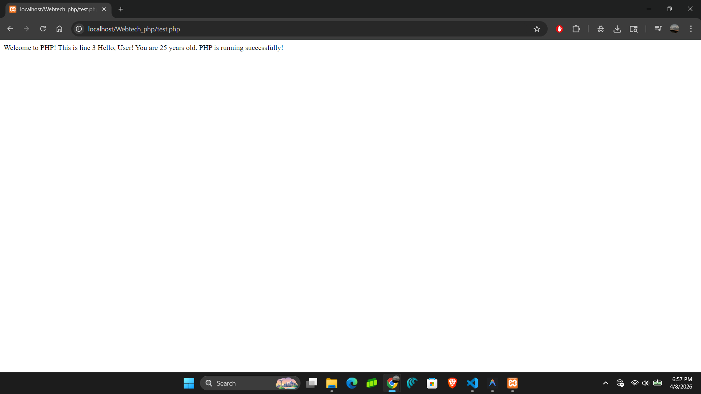

Step-wise Procedure to Setup & Run PHP
To learn how to configure a local server environment and execute server-side PHP scripts using XAMPP.
Download and install XAMPP to setup a local Apache server capable of running PHP.

Open XAMPP Control Panel and click "Start" next to Apache to activate your local web server.

Navigate to C:\xampp\htdocs\ and create a new folder for your project (e.g., Webtech_php).

Open the folder in VS Code, create a test.php file, and write your PHP echo statements.

Open your browser and navigate to localhost/Webtech_php/test.php to view the output.

Successfully established a local web server environment using XAMPP and verified its functionality by executing a basic PHP script in the browser.